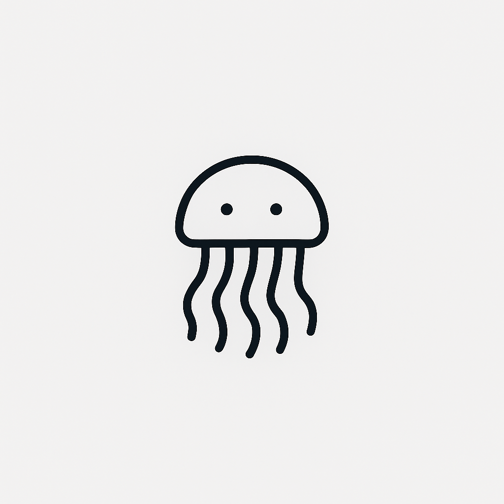

Kuraji -「クラジ」
Open-Source browser extension for Firefox and Chrome that automatically finds Japanese subtitles for the video you are watching.
Open-Source browser extension for Firefox and Chrome that automatically finds Japanese subtitles for the video you are watching.